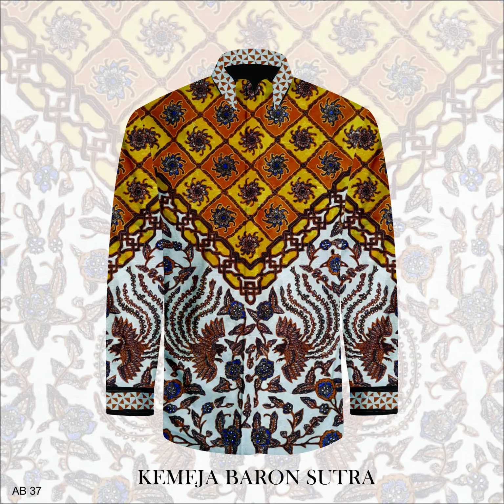

Produk Unggulan Kami


UMKM Pekalongan adalah wadah bagi para pelaku usaha mikro, kecil, dan menengah di Kota Pekalongan. Kami berkomitmen untuk melestarikan dan mengembangkan produk-produk lokal berkualitas, mulai dari batik yang sudah mendunia hingga kuliner khas yang menggugah selera.
Alamat: Jl.raya surabayan No. 127, Pekalongan
Email: rohanitunyanan499@gmail.com
Telepon: (0813) 62175921